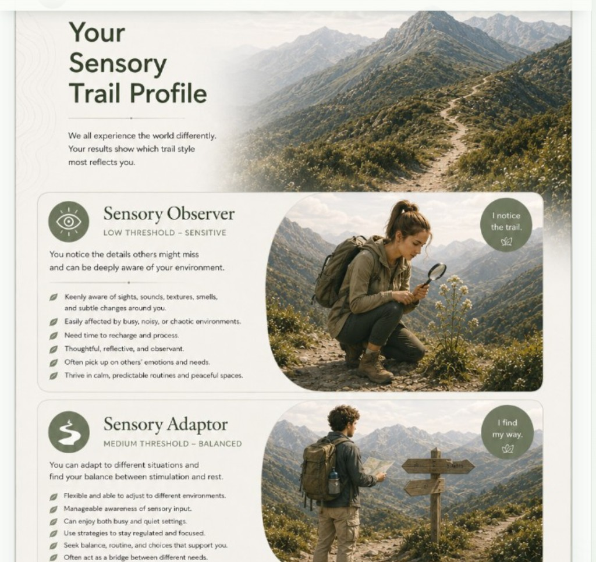
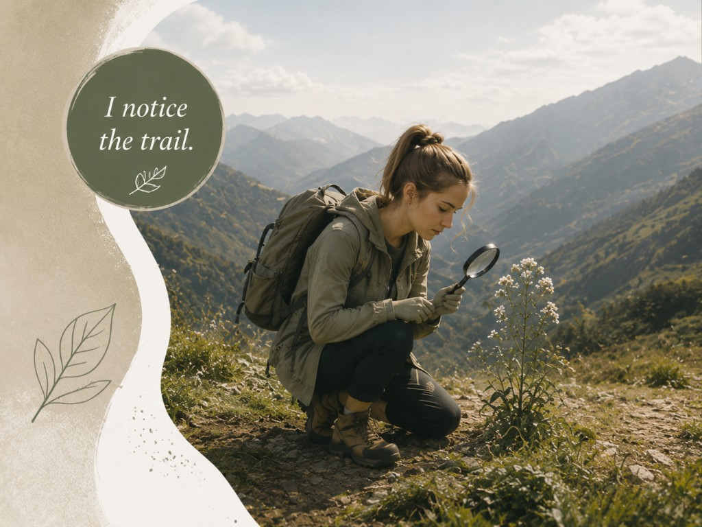
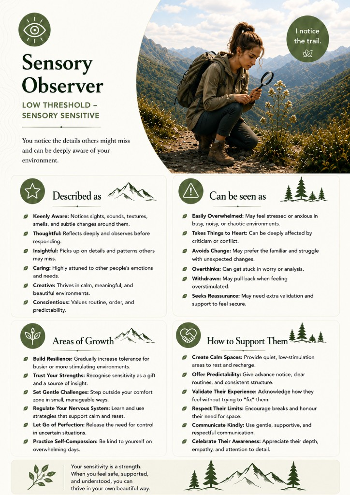
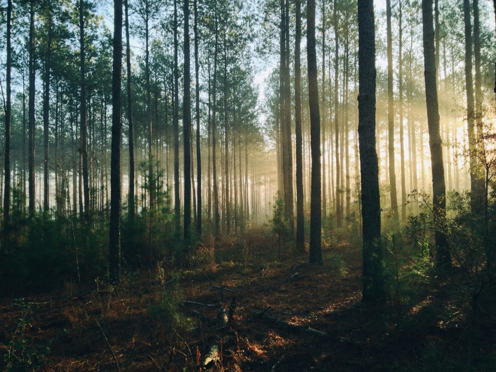
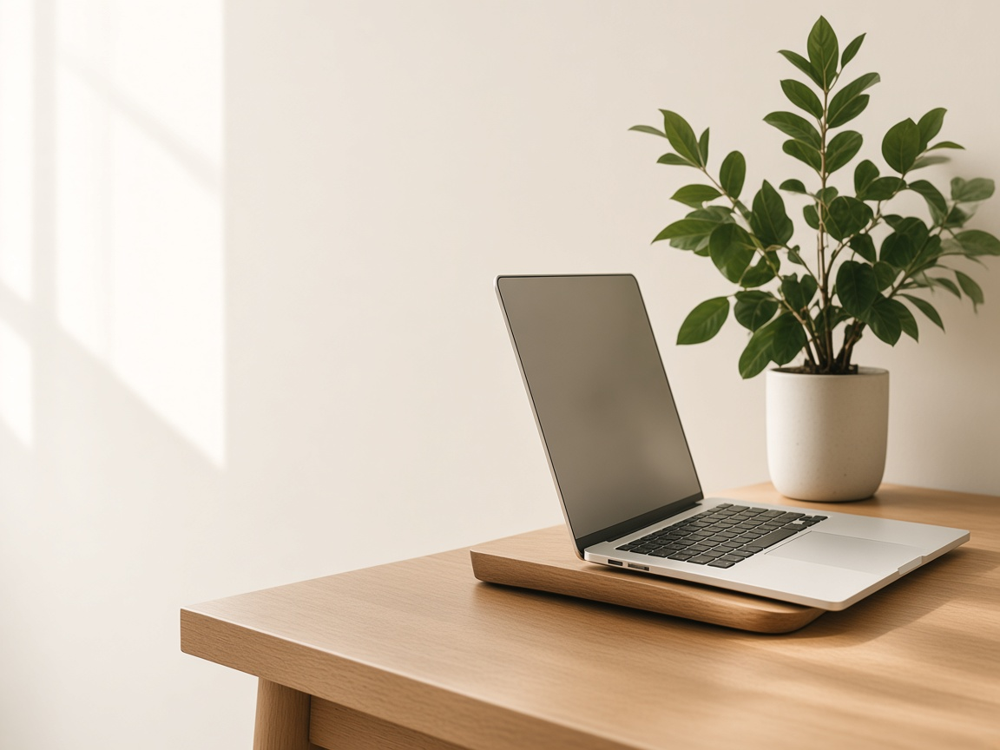
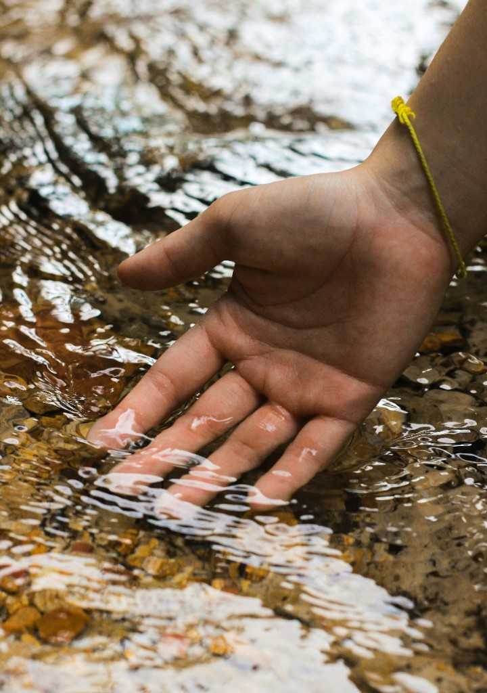
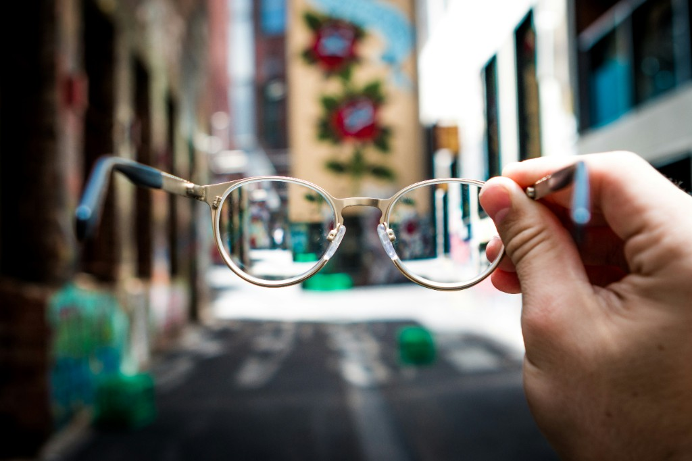
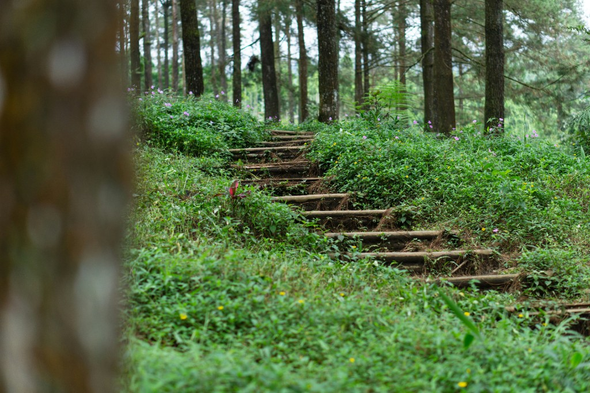

Soulful Sensory OTOccupational Therapy Services
Viewpoint
Sensory trail profile
Amina Jacobs
Regarding: work
11 October 2026
Page 1 — Cover
Soulful Sensory OTOccupational Therapy Services
Viewpoint
Amina Jacobs
Regarding: work
11 October 2026
Page 2 — Sensory trail profile

Page 3 — Matched trail
Your sensory trail character
Based on the overall score from this screening, here is the trail style that fits these answers most closely.

You are
Low threshold — notices input quickly
Detail, sound, and proximity register early. A busy open-plan day can fill the sensory bucket before the work itself is finished.
Top traits
“There is no right or wrong profile. Your trail is unique — this is a descriptive map, not a diagnosis.
Page 3
Page 4 — Matched trail description

Page 5 — Scores

Low and high threshold language draws on Winnie Dunn’s Model of Sensory Processing (Dunn, 1997). The three Sensory Trail styles are this screening’s own descriptive map.
“Understanding your sensory needs is not about changing who you are — it’s about creating an environment where you can thrive.
Soulful Sensory OT
Page 5
Page 6 — Specific findings
A closer look
Loud environments, crowds, touch, and thrill-seeking, kept whole on the page.
Hearing
Noise is noticed quickly. Open-plan sound and overlapping talk are likely to interrupt focus.
Touch
Busy shared spaces raise the load. An edge seat or a less crowded zone is easier to stay in.
“Name the situations that fill the bucket first. The supports on the following pages are written for those moments.
Page 6
Page 7 — Specific findings, continued
A closer look
Touch
Unexpected contact is more tiring than it looks. Clear space agreements help.
Movement
Fast, unpredictable movement is not the draw. A steady pace between meetings is easier.

“Small changes in noise, space, and pace often do more than pushing through a full bucket.
Page 7
Page 8 — Hearing
Open-plan noise, notifications, and overlapping talk can make concentration harder than the work itself.
Before the workday
During the workday
After work
“A quieter start gives the nervous system room to settle before the first meeting.
Page 8
Page 9 — Touch

Crowded desks, scratchy seating, and unexpected proximity can nag at attention through the day.
Before the workday
During the workday
After work
“Clear agreements about space and contact make a shared office easier to stay in.
Page 9
Page 10 — Movement
Some days sitting is easy. On others the body needs a change of pace before focus comes back.
Before the workday
During the workday
After work
“Match the movement to the morning: a short walk when the body is restless, a slower settle when the day was already rushed.
Page 10
Page 11 — Vision

A plain desk and long dense documents can feel flat, so attention goes looking for colour, movement, or a view.
Before the workday
During the workday
After work
“Colour, a view, and something for the eyes to hold keep a plain desk from going flat.
Page 11
Page 12 — Smell and taste
Office scents and strong lunch flavours are usually manageable, and become intrusive on a tired or deadline-heavy day.
Before the workday
During the workday
After work
“Flavour and scent can follow the day: milder when the load is already high, a little more interest when the day feels flat.
Page 12
Page 13 — Everyday load
It is often the pile-up — noise, light, people, and pace together — that leaves little left for the commute or for home.
Before the workday
During the workday
After work
“Recovery after work is part of the plan, not whatever is left if the day allows.
Page 13
Page 14 — Best Saturday
Almost there
A free-text snapshot of what an ideal day looks like — useful sensory clues beyond the scores.
A slow morning with the window open and no alarm. A walk before anyone needs anything. Lunch outside, then a quiet afternoon with one task, not five. Evening with one person, low music, and an early night.
Knowing what a good day feels like makes it easier to shape a workday that does not spend the whole bucket before lunch.
Page 14
Page 15 — At work
Every meeting, notification, and crowded walk adds to the load. When the bucket is full, focus, patience, and recovery all get harder — even if the tasks themselves are familiar.
Page 15
Page 16 — Therapist notes, only when notes have been added
Therapist insights
Amina manages detailed work well when the morning starts quietly. Open-plan afternoons are the point where sound and proximity stack, and the quality of the work drops even though effort stays high.
The most useful first step is one protected focus block and an edge desk, reviewed with the line manager after two weeks.

Noticing your sensory needs at work is how a busy day becomes something you can plan for.
Page 16